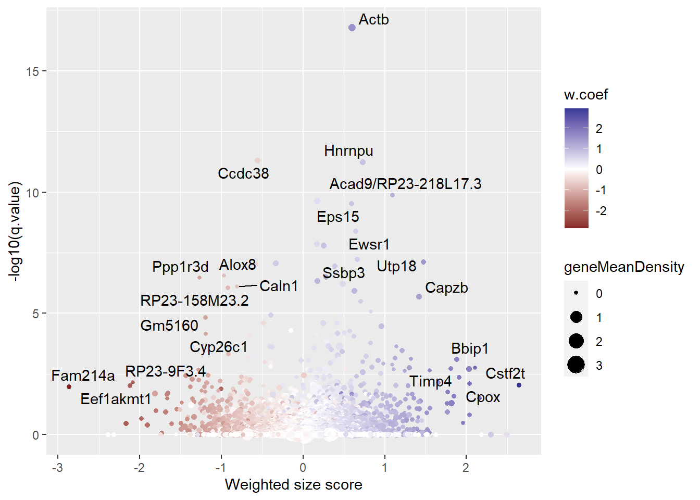
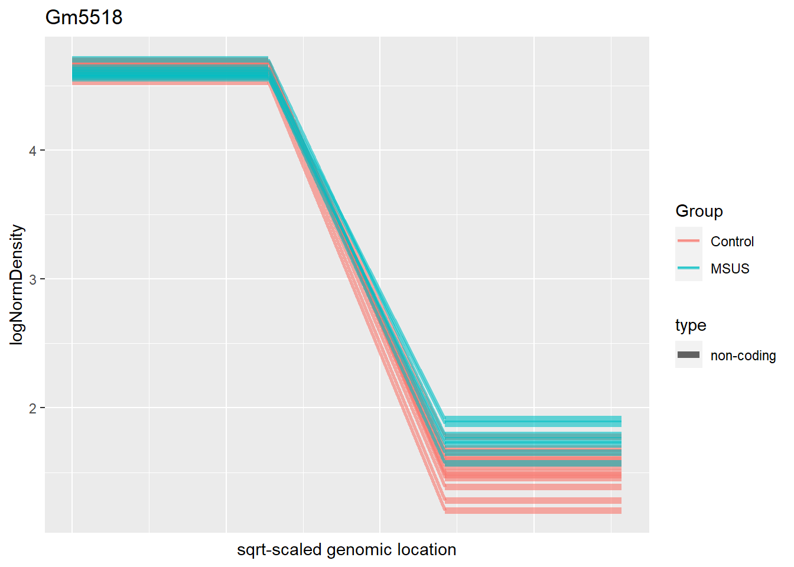
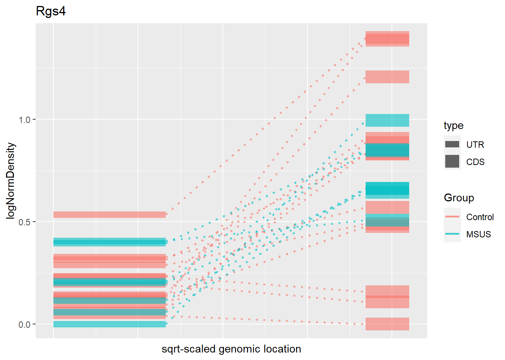
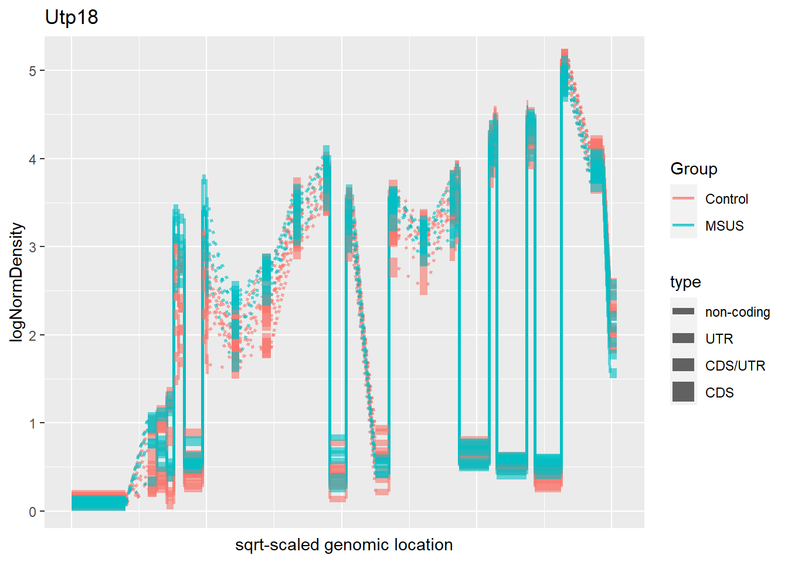
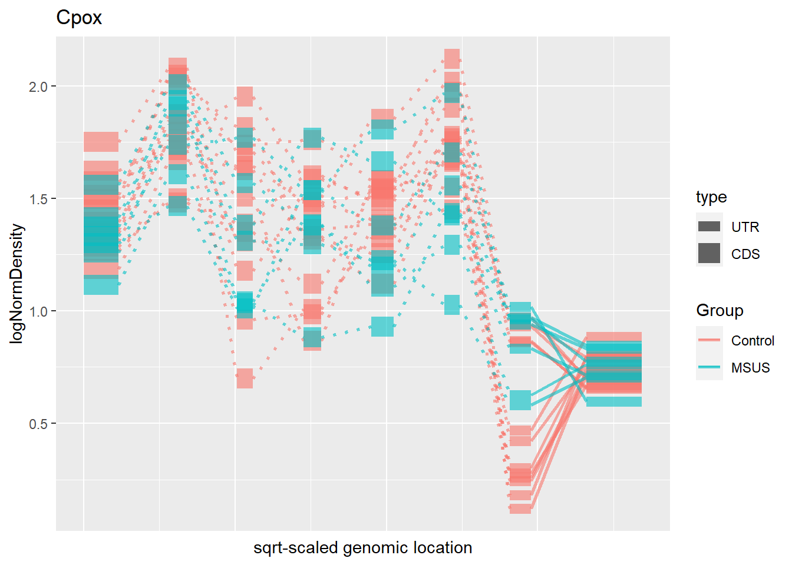
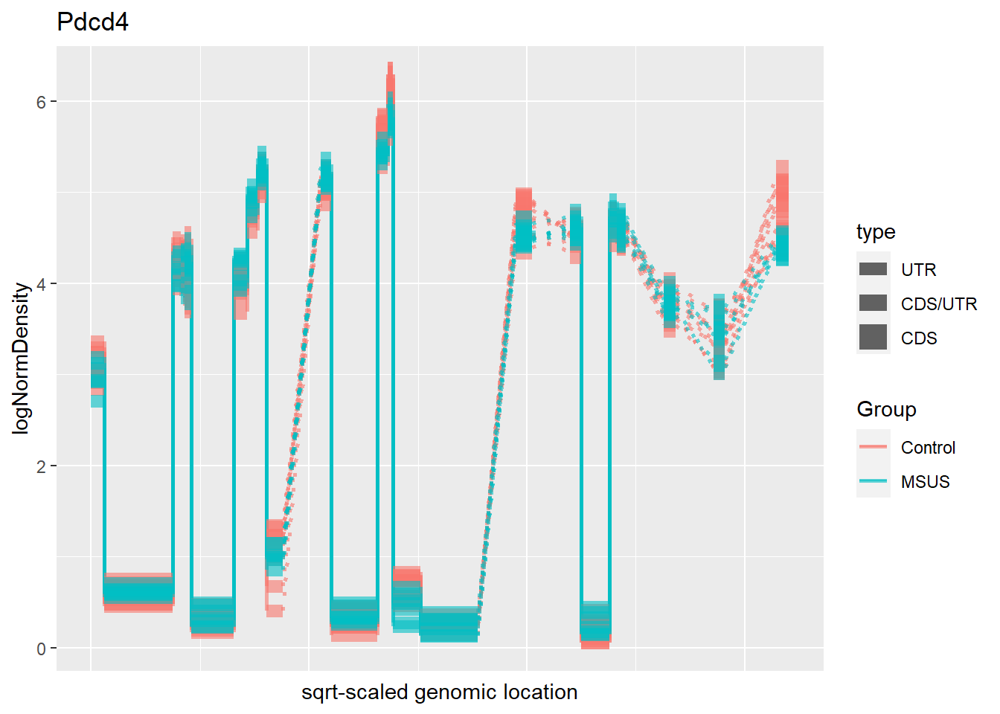

Vignette Plot
Last updated: 2021-04-11
Checks: 6 1
Knit directory: project6_bc2021/
This reproducible R Markdown analysis was created with workflowr (version 1.6.2). The Checks tab describes the reproducibility checks that were applied when the results were created. The Past versions tab lists the development history.
Great! Since the R Markdown file has been committed to the Git repository, you know the exact version of the code that produced these results.
Great job! The global environment was empty. Objects defined in the global environment can affect the analysis in your R Markdown file in unknown ways. For reproduciblity it’s best to always run the code in an empty environment.
The command set.seed(20210323) was run prior to running the code in the R Markdown file. Setting a seed ensures that any results that rely on randomness, e.g. subsampling or permutations, are reproducible.
Great job! Recording the operating system, R version, and package versions is critical for reproducibility.
Nice! There were no cached chunks for this analysis, so you can be confident that you successfully produced the results during this run.
Using absolute paths to the files within your workflowr project makes it difficult for you and others to run your code on a different machine. Change the absolute path(s) below to the suggested relative path(s) to make your code more reproducible.
| absolute | relative |
|---|---|
| C:/Users/chabb/Desktop/ETHZ/3. Jahr/6. Semester/Blockkurs/2. Epigenetic mechanism/Project/project6_bc2021 | . |
| C:/Users/chabb/Desktop/ETHZ/3. Jahr/6. Semester/Blockkurs/2. Epigenetic mechanism/Project/project6_bc2021/data/counts_bins_apa.rds | data/counts_bins_apa.rds |
Great! You are using Git for version control. Tracking code development and connecting the code version to the results is critical for reproducibility.
The results in this page were generated with repository version 000b69c. See the Past versions tab to see a history of the changes made to the R Markdown and HTML files.
Note that you need to be careful to ensure that all relevant files for the analysis have been committed to Git prior to generating the results (you can use wflow_publish or wflow_git_commit). workflowr only checks the R Markdown file, but you know if there are other scripts or data files that it depends on. Below is the status of the Git repository when the results were generated:
Ignored files:
Ignored: data/counts_bins.rds
Untracked files:
Untracked: data/counts_bins_apa.rds
Note that any generated files, e.g. HTML, png, CSS, etc., are not included in this status report because it is ok for generated content to have uncommitted changes.
These are the previous versions of the repository in which changes were made to the R Markdown (analysis/4_Vignette_Plot_PND8_JC.Rmd) and HTML (docs/4_Vignette_Plot_PND8_JC.html) files. If you’ve configured a remote Git repository (see ?wflow_git_remote), click on the hyperlinks in the table below to view the files as they were in that past version.
| File | Version | Author | Date | Message |
|---|---|---|---|---|
| Rmd | 000b69c | Julien Chabbey | 2021-04-11 | graph for top 10 genes |
| Rmd | fedf7ca | Julien Chabbey | 2021-03-31 | html files and relocation |
| html | fedf7ca | Julien Chabbey | 2021-03-31 | html files and relocation |
#library
library(diffUTR)
library(SummarizedExperiment)
library(GenomicRanges)
library(dplyr)
library(ggplot2)setwd("C:/Users/chabb/Desktop/ETHZ/3. Jahr/6. Semester/Blockkurs/2. Epigenetic mechanism/Project/project6_bc2021")
se <- readRDS("C:/Users/chabb/Desktop/ETHZ/3. Jahr/6. Semester/Blockkurs/2. Epigenetic mechanism/Project/project6_bc2021/data/counts_bins_apa.rds")
cd <- data.frame(colData(se), stringsAsFactors = F)
pnd8 <- cd$Stage == "PND8"
sePND8 <- se[,pnd8]
sePND8_exon <- sePND8
sePND8_exon <- diffSpliceWrapper(sePND8_exon, design = ~Batch+Group)Testing coefficient GroupMSUSTotal number of exons: 316430
Total number of genes: 22903
Number of genes with 1 exon: 5745
Mean number of exons in a gene: 14
Max number of exons in a gene: 418 se_apa <- readRDS("C:/Users/chabb/Desktop/ETHZ/3. Jahr/6. Semester/Blockkurs/2. Epigenetic mechanism/Project/project6_bc2021/data/counts_bins_apa.rds")
cd2 <- data.frame(colData(se_apa))
pnd8_2 <- cd2$Stage == "PND8"
sePND8UTR <- se_apa[,pnd8_2]
sePND8_utr <- diffSpliceWrapper(sePND8UTR, design = ~Batch+Group,
excludeTypes = c("CDS","non-coding"))Testing coefficient GroupMSUSTotal number of exons: 316430
Total number of genes: 22903
Number of genes with 1 exon: 5745
Mean number of exons in a gene: 14
Max number of exons in a gene: 418 #Top genes
#Exon
plotTopGenes(sePND8_exon)#UTR
sePND8_utr <- geneLevelStats(sePND8_utr, includeTypes="3UTR")
plotTopGenes(sePND8_utr, diffUTR = TRUE)Warning: ggrepel: 3 unlabeled data points (too many overlaps). Consider
increasing max.overlaps
#Gene profiler
#Exon
#Top 10 genes: Wbp11, AC141643.2, Gm5518, Prpf38a, Rgs4, Slc26a6, RP23-182M12.2, Actb, RP23-388l22.1, Gja4
sePND8_exon <- addNormalizedAssays(sePND8_exon)
#deuBinPlot(sePND8_exon,"Jund")
#deuBinPlot(sePND8_exon,"Jund", type="Group", colour="Group")
#deuBinPlot(sePND8_exon,"Jund", type="sample", colour="Group")
#deuBinPlot(sePND8_exon,"Jund",type="Group",colour="Group") +
#guides(colour = guide_legend(override.aes = list(size = 3))) +
#scale_colour_manual(values=c(CTRL="darkblue", LTP="red"))
#UTR
#Top 10 genes: Actb, Ccdc38, Hnrnpu, Eps15, Utp18, Capzb, Ipcef1, Pdcd4, Cstf2t, Fam214a
sePND8_exon <- addNormalizedAssays(sePND8_exon)
#deuBinPlot(sePND8_utr,"Jund")
#deuBinPlot(sePND8_utr,"Jund", type="Group", colour="Group")
#deuBinPlot(sePND8_utr,"Jund", type="sample", colour="Group")
#deuBinPlot(sePND8_utr,"Jund",type="condition",colour="condition") +
# guides(colour = guide_legend(override.aes = list(size = 3))) +
#scale_colour_manual(values=c(CTRL="darkblue", LTP="red"))#Heatmap
#Exon
#geneBinHeatmap(sePND8_exon, "Smg6")
#UTR
#geneBinHeatmap(sePND8_utr, "Smg6")#Wbp11 - Exon
#Gene profiler
deuBinPlot(sePND8_exon,"Wbp11")#deuBinPlot(sePND8_exon,"Wbp11", type="condition", colour="condition", condition = "Group")
deuBinPlot(sePND8_exon,"Wbp11", type="sample", colour="condition", condition = "Group")#deuBinPlot(sePND8_exon,"Wbp11",type="condition",colour="condition", condition = "Group") +
# guides(colour = guide_legend(override.aes = list(size = 3))) +
#scale_colour_manual(values=c(CTRL="darkblue", LTP="red"))
#Heatmap
geneBinHeatmap(sePND8_exon, "Wbp11")#AC141643.2 - Exon
#Gene profiler
deuBinPlot(sePND8_exon,"AC141643.2")#deuBinPlot(sePND8_exon,"AC141643.2", type="condition", colour="condition", condition = "Group")
deuBinPlot(sePND8_exon,"AC141643.2", type="sample", colour="condition", condition = "Group")#deuBinPlot(sePND8_exon,"AC141643.2",type="condition",colour="condition", condition = "Group") +
# guides(colour = guide_legend(override.aes = list(size = 3))) +
#scale_colour_manual(values=c(CTRL="darkblue", LTP="red"))
#Heatmap
geneBinHeatmap(sePND8_exon, "AC141643.2")#Gm5518 - Exon
#Gene profiler
deuBinPlot(sePND8_exon,"Gm5518")#deuBinPlot(sePND8_exon,"Gm5518", type="condition", colour="condition", condition = "Group")
deuBinPlot(sePND8_exon,"Gm5518", type="sample", colour="condition", condition = "Group")
#deuBinPlot(sePND8_exon,"Gm5518",type="condition",colour="condition", condition = "Group") +
# guides(colour = guide_legend(override.aes = list(size = 3))) +
#scale_colour_manual(values=c(CTRL="darkblue", LTP="red"))
#Heatmap
geneBinHeatmap(sePND8_exon, "Gm5518")#Prpf38a - Exon
#Gene profiler
deuBinPlot(sePND8_exon,"Prpf38a")#deuBinPlot(sePND8_exon,"Prpf38a", type="condition", colour="condition", condition = "Group")
deuBinPlot(sePND8_exon,"Prpf38a", type="sample", colour="condition", condition = "Group")#deuBinPlot(sePND8_exon,"Prpf38a",type="condition",colour="condition", condition = "Group") +
# guides(colour = guide_legend(override.aes = list(size = 3))) +
#scale_colour_manual(values=c(CTRL="darkblue", LTP="red"))
#Heatmap
geneBinHeatmap(sePND8_exon, "Prpf38a")#Rgs4 - Exon
#Gene profiler
deuBinPlot(sePND8_exon,"Rgs4")#deuBinPlot(sePND8_exon,"Rgs4", type="condition", colour="condition", condition = "Group")
deuBinPlot(sePND8_exon,"Rgs4", type="sample", colour="condition", condition = "Group")
#deuBinPlot(sePND8_exon,"Rgs4",type="condition",colour="condition", condition = "Group") +
# guides(colour = guide_legend(override.aes = list(size = 3))) +
#scale_colour_manual(values=c(CTRL="darkblue", LTP="red"))
#Heatmap
geneBinHeatmap(sePND8_exon, "Rgs4")#Slc26a6 - Exon
#Gene profiler
deuBinPlot(sePND8_exon,"Slc26a6")#deuBinPlot(sePND8_exon,"Slc26a6", type="condition", colour="condition", condition = "Group")
deuBinPlot(sePND8_exon,"Slc26a6", type="sample", colour="condition", condition = "Group")#deuBinPlot(sePND8_exon,"Slc26a6",type="condition",colour="condition", condition = "Group") +
# guides(colour = guide_legend(override.aes = list(size = 3))) +
#scale_colour_manual(values=c(CTRL="darkblue", LTP="red"))
#Heatmap
geneBinHeatmap(sePND8_exon, "Slc26a6")#RP23-182M12.2 - Exon
#Gene profiler
#deuBinPlot(sePND8_exon,"RP23-182M12.2")
#deuBinPlot(sePND8_exon,"RP23-182M12.2", type="condition", colour="condition", condition = "Group")
#deuBinPlot(sePND8_exon,"RP23-182M12.2", type="sample", colour="condition", condition = "Group")
#deuBinPlot(sePND8_exon,"RP23-182M12.2",type="condition",colour="condition", condition = "Group") +
# guides(colour = guide_legend(override.aes = list(size = 3))) +
#scale_colour_manual(values=c(CTRL="darkblue", LTP="red"))
#Heatmap
geneBinHeatmap(sePND8_exon, "RP23-182M12.2")#Actb - Exon
#Gene profiler
#deuBinPlot(sePND8_exon,"Actb")
#deuBinPlot(sePND8_exon,"Actb", type="condition", colour="condition", condition = "Group")
#deuBinPlot(sePND8_exon,"Actb", type="sample", colour="condition", condition = "Group")
#deuBinPlot(sePND8_exon,"Actb",type="condition",colour="condition", condition = "Group") +
# guides(colour = guide_legend(override.aes = list(size = 3))) +
#scale_colour_manual(values=c(CTRL="darkblue", LTP="red"))
#Heatmap
geneBinHeatmap(sePND8_exon, "Actb")#RP23-388l22.1 - Exon
#Gene profiler
#deuBinPlot(sePND8_exon,"RP23-388I22.1")
#deuBinPlot(sePND8_exon,"RP23-388I22.1", type="condition", colour="condition", condition = "Group")
#deuBinPlot(sePND8_exon,"RP23-388I22.1", type="sample", colour="condition", condition = "Group")
#deuBinPlot(sePND8_exon,"RP23-388I22.1",type="condition",colour="condition", condition = "Group") +
# guides(colour = guide_legend(override.aes = list(size = 3))) +
#scale_colour_manual(values=c(CTRL="darkblue", LTP="red"))
#Heatmap
geneBinHeatmap(sePND8_exon, "RP23-388I22.1")#Gja4 - Exon
#Gene profiler
deuBinPlot(sePND8_exon,"Gja4")#deuBinPlot(sePND8_exon,"Gja4", type="condition", colour="condition", condition = "Group")
deuBinPlot(sePND8_exon,"Gja4", type="sample", colour="condition", condition = "Group")#deuBinPlot(sePND8_exon,"Gja4",type="condition",colour="condition", condition = "Group") +
# guides(colour = guide_legend(override.aes = list(size = 3))) +
#scale_colour_manual(values=c(CTRL="darkblue", LTP="red"))
#Heatmap
geneBinHeatmap(sePND8_exon, "Gja4")#Top 10 genes (UTR): Actb, Ccdc38, Hnrnpu, Eps15, Utp18, Capzb, Cpox, Alox8, Cstf2t, Fam214a
#Actb - UTR
#Gene profiler
#deuBinPlot(sePND8_exon,"Actb")
#deuBinPlot(sePND8_exon,"Actb", type="condition", colour="condition", condition = "Group")
#deuBinPlot(sePND8_exon,"Actb", type="sample", colour="condition", condition = "Group")
#deuBinPlot(sePND8_exon,"Actb",type="condition",colour="condition", condition = "Group") +
# guides(colour = guide_legend(override.aes = list(size = 3))) +
#scale_colour_manual(values=c(CTRL="darkblue", LTP="red"))
#Heatmap
geneBinHeatmap(sePND8_exon, "Actb")#Ccdc38 - UTR
#Gene profiler
deuBinPlot(sePND8_exon,"Ccdc38")#deuBinPlot(sePND8_exon,"Ccdc38", type="condition", colour="condition", condition = "Group")
#deuBinPlot(sePND8_exon,"Ccdc38", type="sample", colour="condition", condition = "Group")
#deuBinPlot(sePND8_exon,"Ccdc38",type="condition",colour="condition", condition = "Group") +
# guides(colour = guide_legend(override.aes = list(size = 3))) +
#scale_colour_manual(values=c(CTRL="darkblue", LTP="red"))
#Heatmap
geneBinHeatmap(sePND8_exon, "Ccdc38")#Hnrnpu - UTR
#Gene profiler
deuBinPlot(sePND8_exon,"Hnrnpu")#deuBinPlot(sePND8_exon,"Hnrnpu", type="condition", colour="condition", condition = "Group")
deuBinPlot(sePND8_exon,"Hnrnpu", type="sample", colour="condition", condition = "Group")#deuBinPlot(sePND8_exon,"Hnrnpu",type="condition",colour="condition", condition = "Group") +
# guides(colour = guide_legend(override.aes = list(size = 3))) +
#scale_colour_manual(values=c(CTRL="darkblue", LTP="red"))
#Heatmap
geneBinHeatmap(sePND8_exon, "Hnrnpu")
#Eps15 - UTR
#Gene profiler
deuBinPlot(sePND8_exon,"Eps15")#deuBinPlot(sePND8_exon,"Eps15", type="condition", colour="condition", condition = "Group")
deuBinPlot(sePND8_exon,"Eps15", type="sample", colour="condition", condition = "Group")
#deuBinPlot(sePND8_exon,"Eps15",type="condition",colour="condition", condition = "Group") +
# guides(colour = guide_legend(override.aes = list(size = 3))) +
#scale_colour_manual(values=c(CTRL="darkblue", LTP="red"))
#Heatmap
geneBinHeatmap(sePND8_exon, "Eps15")#Utp18 - UTR
#Gene profiler
deuBinPlot(sePND8_exon,"Utp18")#deuBinPlot(sePND8_exon,"Utp18", type="condition", colour="condition", condition = "Group")
deuBinPlot(sePND8_exon,"Utp18", type="sample", colour="condition", condition = "Group")
#deuBinPlot(sePND8_exon,"Utp18",type="condition",colour="condition", condition = "Group") +
# guides(colour = guide_legend(override.aes = list(size = 3))) +
#scale_colour_manual(values=c(CTRL="darkblue", LTP="red"))
#Heatmap
geneBinHeatmap(sePND8_exon, "Utp18")#Capzb - UTR
#Gene profiler
deuBinPlot(sePND8_exon,"Capzb")#deuBinPlot(sePND8_exon,"Capzb", type="condition", colour="condition", condition = "Group")
deuBinPlot(sePND8_exon,"Capzb", type="sample", colour="condition", condition = "Group")#deuBinPlot(sePND8_exon,"Capzb",type="condition",colour="condition", condition = "Group") +
# guides(colour = guide_legend(override.aes = list(size = 3))) +
#scale_colour_manual(values=c(CTRL="darkblue", LTP="red"))
#Heatmap
geneBinHeatmap(sePND8_exon, "Capzb")#Cpox - UTR
#Gene profiler
deuBinPlot(sePND8_exon,"Cpox")#deuBinPlot(sePND8_exon,"Cpox", type="condition", colour="condition", condition = "Group")
deuBinPlot(sePND8_exon,"Cpox", type="sample", colour="condition", condition = "Group")
#deuBinPlot(sePND8_exon,"Cpox",type="condition",colour="condition", condition = "Group") +
# guides(colour = guide_legend(override.aes = list(size = 3))) +
#scale_colour_manual(values=c(CTRL="darkblue", LTP="red"))
#Heatmap
geneBinHeatmap(sePND8_exon, "Cpox")
#Alox8 - UTR
#Gene profiler
deuBinPlot(sePND8_exon,"Alox8")#deuBinPlot(sePND8_exon,"Alox8", type="condition", colour="condition", condition = "Group")
deuBinPlot(sePND8_exon,"Alox8", type="sample", colour="condition", condition = "Group")#deuBinPlot(sePND8_exon,"Alox8",type="condition",colour="condition", condition = "Group") +
# guides(colour = guide_legend(override.aes = list(size = 3))) +
#scale_colour_manual(values=c(CTRL="darkblue", LTP="red"))
#Heatmap
geneBinHeatmap(sePND8_exon, "Alox8")#Cstf2t - UTR
#Gene profiler
deuBinPlot(sePND8_exon,"Cstf2t")#deuBinPlot(sePND8_exon,"Cstf2t", type="condition", colour="condition", condition = "Group")
deuBinPlot(sePND8_exon,"Cstf2t", type="sample", colour="condition", condition = "Group")#deuBinPlot(sePND8_exon,"Cstf2t",type="condition",colour="condition", condition = "Group") +
# guides(colour = guide_legend(override.aes = list(size = 3))) +
#scale_colour_manual(values=c(CTRL="darkblue", LTP="red"))
#Heatmap
geneBinHeatmap(sePND8_exon, "Cstf2t")#Pdcd4 - UTR
#Gene profiler
deuBinPlot(sePND8_exon,"Pdcd4")#deuBinPlot(sePND8_exon,"Pdcd4", type="condition", colour="condition", condition = "Group")
deuBinPlot(sePND8_exon,"Pdcd4", type="sample", colour="condition", condition = "Group")
#deuBinPlot(sePND8_exon,"Pdcd4",type="condition",colour="condition", condition = "Group") +
# guides(colour = guide_legend(override.aes = list(size = 3))) +
#scale_colour_manual(values=c(CTRL="darkblue", LTP="red"))
#Heatmap
geneBinHeatmap(sePND8_exon, "Pdcd4")#Fam214a - UTR
#Gene profiler
deuBinPlot(sePND8_exon,"Fam214a")#deuBinPlot(sePND8_exon,"Fam214a", type="condition", colour="condition", condition = "Group")
deuBinPlot(sePND8_exon,"Fam214a", type="sample", colour="condition", condition = "Group")#deuBinPlot(sePND8_exon,"Fam214a",type="condition",colour="condition", condition = "Group") +
# guides(colour = guide_legend(override.aes = list(size = 3))) +
#scale_colour_manual(values=c(CTRL="darkblue", LTP="red"))
#Heatmap
geneBinHeatmap(sePND8_exon, "Fam214a")
sessionInfo()R version 4.0.4 (2021-02-15)
Platform: x86_64-w64-mingw32/x64 (64-bit)
Running under: Windows 10 x64 (build 19042)
Matrix products: default
locale:
[1] LC_COLLATE=French_Switzerland.1252 LC_CTYPE=French_Switzerland.1252
[3] LC_MONETARY=French_Switzerland.1252 LC_NUMERIC=C
[5] LC_TIME=French_Switzerland.1252
attached base packages:
[1] parallel stats4 stats graphics grDevices utils datasets
[8] methods base
other attached packages:
[1] ggplot2_3.3.3 dplyr_1.0.5
[3] SummarizedExperiment_1.20.0 Biobase_2.50.0
[5] GenomicRanges_1.42.0 GenomeInfoDb_1.26.4
[7] IRanges_2.24.1 S4Vectors_0.28.1
[9] BiocGenerics_0.36.0 MatrixGenerics_1.2.1
[11] matrixStats_0.58.0 diffUTR_0.99.24
[13] workflowr_1.6.2
loaded via a namespace (and not attached):
[1] colorspace_2.0-0 rjson_0.2.20 hwriter_1.3.2
[4] ellipsis_0.3.1 rprojroot_2.0.2 circlize_0.4.12
[7] XVector_0.30.0 GlobalOptions_0.1.2 fs_1.5.0
[10] clue_0.3-58 farver_2.1.0 ggrepel_0.9.1
[13] bit64_4.0.5 AnnotationDbi_1.52.0 fansi_0.4.2
[16] xml2_1.3.2 splines_4.0.4 cachem_1.0.4
[19] geneplotter_1.68.0 knitr_1.31 jsonlite_1.7.2
[22] Rsamtools_2.6.0 Cairo_1.5-12.2 annotate_1.68.0
[25] cluster_2.1.1 dbplyr_2.1.0 png_0.1-7
[28] compiler_4.0.4 httr_1.4.2 lazyeval_0.2.2
[31] assertthat_0.2.1 Matrix_1.3-2 fastmap_1.1.0
[34] limma_3.46.0 later_1.1.0.1 htmltools_0.5.1.1
[37] prettyunits_1.1.1 tools_4.0.4 gtable_0.3.0
[40] glue_1.4.2 GenomeInfoDbData_1.2.4 rappdirs_0.3.3
[43] Rcpp_1.0.6 jquerylib_0.1.3 vctrs_0.3.6
[46] Biostrings_2.58.0 rtracklayer_1.49.5 xfun_0.22
[49] stringr_1.4.0 lifecycle_1.0.0 ensembldb_2.14.0
[52] statmod_1.4.35 XML_3.99-0.6 DEXSeq_1.36.0
[55] edgeR_3.32.1 zlibbioc_1.36.0 scales_1.1.1
[58] ProtGenerics_1.22.0 hms_1.0.0 promises_1.2.0.1
[61] AnnotationFilter_1.14.0 RColorBrewer_1.1-2 ComplexHeatmap_2.6.2
[64] yaml_2.2.1 curl_4.3 memoise_2.0.0
[67] sass_0.3.1 biomaRt_2.46.3 stringi_1.5.3
[70] RSQLite_2.2.4 highr_0.8 genefilter_1.72.1
[73] GenomicFeatures_1.42.2 Rsubread_2.4.3 BiocParallel_1.24.1
[76] shape_1.4.5 rlang_0.4.10 pkgconfig_2.0.3
[79] bitops_1.0-6 evaluate_0.14 lattice_0.20-41
[82] purrr_0.3.4 labeling_0.4.2 GenomicAlignments_1.26.0
[85] bit_4.0.4 tidyselect_1.1.0 magrittr_2.0.1
[88] DESeq2_1.30.1 R6_2.5.0 generics_0.1.0
[91] DelayedArray_0.16.2 DBI_1.1.1 withr_2.4.1
[94] pillar_1.5.1 whisker_0.4 survival_3.2-10
[97] RCurl_1.98-1.3 tibble_3.1.0 crayon_1.4.1
[100] utf8_1.2.1 BiocFileCache_1.14.0 rmarkdown_2.7
[103] GetoptLong_1.0.5 progress_1.2.2 locfit_1.5-9.4
[106] grid_4.0.4 blob_1.2.1 git2r_0.28.0
[109] digest_0.6.27 xtable_1.8-4 httpuv_1.5.5
[112] openssl_1.4.3 munsell_0.5.0 bslib_0.2.4
[115] askpass_1.1